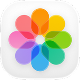

Recursos
Features
Um telefone inteiro para contar sua história. Explore os 19 apps interativos e as ferramentas de autoria.An entire phone to tell your story. Explore 19 interactive apps and authoring tools.
Histórias salvasSaved stories
Selecione um cartão para editar a história.Select a card to edit its story.
PlanejamentoStory planning
Abra Planejamento da história no painel da história.Open Story planning from the story panel.
Narração interativaInteractive storytelling
Escolha mensagens programadas, notificações dinâmicas ou chamadas interativas.Choose scheduled messages, dynamic notifications or interactive calls.
Aplicativos e tela inicialApps and Home Screen
Na tela inicial, abra Aplicativos e escolha os ícones visíveis e o app principal no Dock.On the Home Screen, open Apps and choose visible icons and the main Dock app.
WallpapersWallpapers
Escolha imagens separadas para a tela inicial e de bloqueio.Choose separate images for Home and Lock Screens.
NotificaçõesNotifications
Na tela inicial ou de bloqueio, abra o painel Notificações e clique em Editar notificações.On the Home or Lock Screen, open Notifications and select Edit notifications.
MessagesMessages
Crie personagens no painel e toque em + para montar uma conversa.Create characters in the panel and tap + to create a chat.
WhatsAppWhatsApp
Ative WhatsApp em Aplicativos.Enable WhatsApp in Apps.
KakaoTalkKakaoTalk
Ative KakaoTalk em Aplicativos.Enable KakaoTalk in Apps.
InstagramInstagram
Abra Perfis do Instagram, clique em Criar perfil e escolha o perfil do dono do iPhone no seletor.Open Instagram profiles, choose Create profile and select the phone owner’s profile.
TwitterTwitter
No painel Twitter, escolha Perfil, Publicação, Notícia, Notificação ou Conversa.In the Twitter panel, choose Profile, Post, News, Notification or Conversation.
PhonePhone
Use Registrar ligação para criar entradas no histórico, Criar voicemail para recados com transcrição e Chamadas interativas para chamadas roteirizadas.Use Register call to create history entries, Create voicemail for messages with transcripts and Interactive calls for scripted calls.
MailMail
Clique em Novo e-mail no painel ou no ícone de escrever no app.Choose New email in the panel or the compose icon in the app.
NotesNotes
Crie uma nota pelo aplicativo, abra-a e escreva título e conteúdo.Create a note in the app, open it and write its title and content.
SafariSafari
Adicione pesquisas recentes pelo painel.Add recent searches from the panel.
MapsMaps
Escolha País inicial do Maps para definir a região de abertura.Choose Maps starting country to set the opening region.
Find MyFind My
Use Adicionar pessoa para cadastrar um personagem no mapa.Use Add person to add a character to the map.
CalendarCalendar
Escolha um dia no aplicativo e use + ou Novo evento no painel.Choose a day in the app and use + or New event in the panel.
ClockClock
Use Novo relógio mundial para adicionar uma cidade e Novo alarme para definir horário e nome.Use New world clock to add a city and New alarm to set a time and name.
WeatherWeather
Edite cidade, temperatura, condição, máxima e mínima.Edit city, temperature, condition, high and low.

PhotosPhotos
Use Adicionar fotos no painel e selecione imagens.Use Add photos in the panel and select images.
SettingsSettings
No painel Dono do iPhone, configure nome, foto, Wi-Fi, Bluetooth e bateria.In iPhone owner, configure name, photo, Wi-Fi, Bluetooth and battery.
WalletWallet
Clique em Adicionar cartão e preencha o formulário de cartão fictício.Choose Add card and fill in a fictional card form.
BankBank
Abra Configurar conta para editar titular, saldo e moeda.Open Configure account to edit the holder, balance and currency.
YouTubeYouTube
Crie um canal com nome, foto e banner.Create a channel with name, photo and banner.